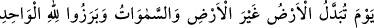
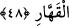

Denilir ki ilk kez zorbalık eden, insanları baskı altına alan, kötü işleri âdet haline
getiren ve ilk defa taç giyen kimse Nemrud’dur. Allah onu genzine giren bir sivrisinekle
helâk etti. Sivrisineğin kırk gün süren ezâ ve işkencesinden sonra da öldü.
Bir hasım ki O’nun tarafına ok attı
O hasmın işini görmeye bir sinek yetti
Mesnevî’de şöyle denilir:
Nefsini alçak gören kişiye ne mutlu!
Serkeşlikle dağ gibi baş kaldıran kişinin de vay haline.
Ona kulluk etmek, sultanlıktan iyidir.
Çünkü “Ben ondan üstünüm.” (el-A‘râf, 7/12) sözü, şeytan sözüdür.
Be aşağılık, Âdem’in kulluğu ile İblis’in kibrine bak da
Aradaki farkı gör. Âdem’in kulluğunu seç.
Ey mü’minler! Nerede nebiler ve rasûller? Nerede mukarreb velîler? Nerede geçmiş
krallar ve mütekebbir zorbalar? Size ne oluyor da onlara bakıp ibret almıyorsunuz!?
Eğer aklınız çalışıyorsa tâatler konusunda gayret edin ve Allah’a döndürüleceğiniz,
sonra da herkese hak ettiğinin eksiksiz olarak verileceği ve kimseye haksızlık
edilmeyeceği günden sakının!
48. O gün yer başka bir yere çevrilir, gökler de başka göklere çevrilir. Bütün
yaratılmışlar, tek ve gücüne karşı durulamaz olan Allah’ın huzûrunda görünürler.
“O gün yer başka bir yere çevrilir, gökler de başka göklere çevrilir.” Şu bilinen
yeryüzünün bilinmeyen başka bir yere, göklerin de başka göklere çevrileceği günü
zikret. Haşr, bu çevrilme sırasında karanlıkta henüz köprü kurulmamışken ya da şu
rivâyette belirtildiği üzere insanlar sıratın üzerinde iken meydana gelecektir.
Hz. Âişe (r. anhâ)’dan rivâyet edildiğine göre kendisi Hz. Peygamber (s.a.)’e:
“–Ey Allah’ın Rasûlü! Kıyâmet günü siz âile ferdlerinizi hatırlayacak mısınız?’ diye
sordu. Hz. Peygamber (s.a.):
“–Üç yerde hatırlamayacağım: Sıratta, kitapların verilişi sırasında ve ameller
tartılırken.” diye cevap verdi. Hz. Âişe devamla şöyle diyor:
“–Dedim ki: “Ey Allah’ın Rasûlü! Yerin bir başka yere çevrileceği gün insanlar
nerede olacak?” Hz. Peygamber (s.a.):